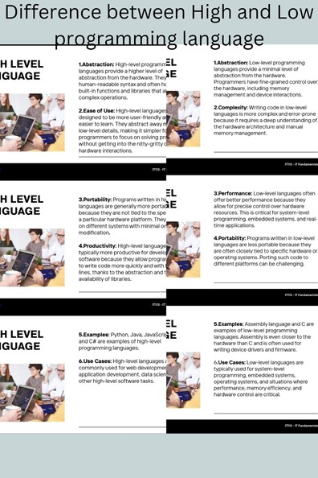

LEARNING 1:

Between high and low-level programming languages by highlighting that high-level languages are more abstract and user-friendly, often resembling human language, while low-level languages provide more direct control over hardware and are closer to machine code. Additionally, emphasize that high-level languages offer portability and easier maintenance, whereas low-level languages enable precise optimization but demand more expertise and effort